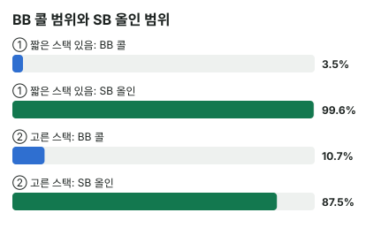
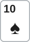

안녕하세요. E11·E12에서 버블의 콜은 ICM 필요 승률이 높아지고, 테이블에 짧은 스택이 있으면 더 높아진다고 했죠. I19·I20에서는 SB 올인과 BB 콜을 칩 기준으로 계산했고요.
오늘은 ICM으로 두 자리를 다 봐요. 콜하는 BB만이 아니라 올인하는 SB까지요. Hero와 상대 스택은 그대로인데, 다른 두 사람 스택만 바뀌어도 같은 핸드의 답이 뒤집히는 걸 확인할게요.
이 글에서 배울 것
- ICM에서 SB 올인의 손익을 "접을 때 몫 + 콜 받을 때 몫"으로 나눠 구하는 법
- 짧은 스택이 있으면 BB는 좁게 콜하고, 그래서 SB는 넓게 올인하게 되는 연결
- 콜 받았을 때 손해가 더 큰데도 올인이 더 좋아질 수 있는 이유
오늘의 조건 (고정)
- 4명 남음, 상금 1등 50 · 2등 30 · 3등 20 · 4등 0(예시 단위)
- 블라인드 SB 0.5BB · BB 1BB, 앤티 0, 전체 칩 65BB
- CO·BTN은 폴드, SB 15BB vs BB 15BB
| 분포 | CO | BTN |
|---|---|---|
| ① 짧은 스택 있음 (E11 장면) | 5BB | 30BB |
| ② 고른 스택 | 17.5BB | 17.5BB |
숫자는 뚝섬 AOF 차트 엔진을 ICM 모드(상금 반영, 블라인드 압박 없음)로 돌린 이론값이에요. 실전 15BB에는 작은 오픈도 있지만, 오늘은 올인과 폴드 두 가지만 비교하는 가정이에요. 아래 금액은 칩이 아니라 기대 상금이에요.
결론부터 말할게요. 이 조건에서 SB의 T♠4♦는 ①에서 올인, ②에서 폴드이고, BB의 A♠J♦는 ①에서 폴드, ②에서 콜이 이득입니다.
- T♠4♦ 올인 − 폴드: ① 약 +0.66 · ② 약 −0.003
- A♠J♦: ① 에퀴티 약 63.6% < 필요 약 66.9% · ② 약 62.9% > 약 60.9%
1단계. BB의 콜 기준이 갈리는 이유
지면 둘 다 4등
BB가 콜하면 15 vs 15라, 지면 두 분포 모두 바로 4등(0)이에요. 그러니 차이는 폴드했을 때 기대 상금에서 나와요. 폴드하면 BB 14BB · SB 16BB가 남아요(E11 방식).
필요 승률
E11의 식 (폴드 − 짐) ÷ (이김 − 짐)에서 짐이 0이니 폴드 ÷ 이김이에요.
① ICM 필요 승률 = 25.55103(폴드) ÷ 38.18681(이김) = 약 66.9%
② ICM 필요 승률 = 22.66692(폴드) ÷ 37.24696(이김) = 약 60.9%
①은 E11 본문, ②는 E11 문제 2에서 본 값과 같아요. 왜 ①의 기준선이 높은지 단계로 나눠 볼게요.
- ①에는 CO 5BB가 있어요. E10 방식으로 등수를 뽑으면 칩이 가장 적은 CO가 4등이 될 확률이 크게 잡혀요
- 그러면 BB는 폴드하고 살아 있기만 해도 4등을 피할 가능성이 커서, 폴드 값이 ① 약 25.55로 ② 약 22.67보다 커요
- 폴드 값이 크니 콜로 그걸 걸려면 더 자주 이겨야 해서, 기준선이 ① 66.9%로 ② 60.9%보다 높아요
E12의 말로 하면 버블 팩터는 ① 약 2.31 · ② 약 1.78, 리스크 프리미엄은 ① 약 20.2%p · ② 약 14.2%p예요.
그래서 콜 범위와 올인 범위가
| ① 짧은 스택 있음 | ② 고른 스택 | |
|---|---|---|
| BB 콜 범위 | 약 3.5% | 약 10.7% |
| SB 올인 범위 | 약 99.6% | 약 87.5% |
①에서 BB는 아주 좁게만 콜해요. BB가 거의 콜하지 않으니, SB는 넓게 밀어도 콜을 덜 받아요. 그래서 SB 올인 범위가 거의 전부로 넓어져요.

2단계. Hero가 SB에서 T♠4♦

올인 손익을 두 몫으로
올인 − 폴드 = 접을 때 몫 + 콜 받을 때 몫이에요(I18 방식, 단위는 기대 상금).
- 접을 때 몫 = BB가 접는 비율 × BB가 접으면 버는 상금
- 콜 받을 때 몫 = BB가 콜하는 비율 × 콜 받았을 때 평균(폴드 대비)
"BB가 접으면 버는 상금"은 모두 접었을 때(SB 16BB)의 기대 상금에서 SB가 폴드할 때(14.5BB)의 기대 상금을 뺀 값이에요. ①이면 27.41006 − 26.02891 = 1.38115예요. 폴드 대비 1.5BB(내 SB 0.5 + BB 1)를 더 갖는 게 상금으로 이만큼이에요.
① 짧은 스택 있음
0.96494(BB가 접는 비율) × 1.38115(접으면 버는 상금) = 약 +1.33
0.03506(BB가 콜하는 비율) × (−19.14471)(콜 받았을 때 평균) = 약 −0.67
합 약 +0.66 → 올인
② 고른 스택
0.89347(BB가 접는 비율) × 1.60153(접으면 버는 상금) = 약 +1.4309
0.10653(BB가 콜하는 비율) × (−13.4599)(콜 받았을 때 평균) = 약 −1.4339
합 약 −0.003 → 폴드(거의 본전이라 엔진은 가끔 올인을 섞어요)
이게 무슨 뜻이냐면
콜 받았을 때 평균 손해는 오히려 ①이 더 커요(약 −19.14 대 약 −13.46). 그런데도 ①에서 올인이 좋은 건 BB가 거의 콜하지 않기 때문이에요. 콜 받을 일이 100번 중 3~4번이면, 콜 받았을 때 크게 잃어도 전체 몫은 작아요.
3단계. Hero가 BB에서 A♠J♦ (SB가 엔진 범위로 올인)


| ① 짧은 스택 있음 | ② 고른 스택 | |
|---|---|---|
| SB 올인 범위 상대 에퀴티 | 약 63.6% | 약 62.9% |
| ICM 필요 승률 | 약 66.9% | 약 60.9% |
| 판정 | 폴드 | 콜 |
A♠J♦의 에퀴티는 두 분포에서 거의 같아요. 그런데 ①은 필요 승률에 모자라고 ②는 넘어요. 판정을 가른 건 핸드가 아니라 기준선이에요.
왜 그럴까: 두 자리의 결정은 서로 물려 있어요
BB의 부담이 SB의 무기가 돼요
①에서 BB는 지면 4등이고, 폴드하면 CO가 먼저 떨어질 가능성 덕에 몫이 커요. 그래서 BB는 아주 좁게만 콜해요(약 3.5%).
SB는 그 사정을 이용해요. BB가 거의 안 받아 주니, T♠4♦ 같은 약한 핸드로도 블라인드를 가져오는 몫(약 +1.33)이 콜 받는 손해(약 −0.67)를 넉넉히 덮어요. BB를 묶어 두는 짧은 스택이 SB에게는 공짜 블라인드가 되는 셈이에요.
SB도 지면 탈락인데 왜 넓게 밀까
SB도 15BB라 콜 받고 지면 4등이에요. 그래서 콜 받았을 때 평균이 크게 나빠요(①에서 약 −19.14). 그런데 SB의 손익은 "콜 받을 확률"이 곱해진 값이에요. BB 콜 범위가 좁으면 이 위험이 거의 드러나지 않아요.
반대로 BB는 결정 순간에 이미 올인을 맞은 상태라, 콜하면 그 위험을 100% 떠안아요. 같은 스택, 같은 상금 구조라도 먼저 거는 쪽과 받는 쪽의 무게가 달라요.
왜 ①에서 콜 받으면 더 아플까
2단계에서 콜 받았을 때 평균은 ① 약 −19.14, ② 약 −13.46이었어요. 이유는 두 가지예요.
- 지면 잃는 게 더 커요. SB가 폴드할 때 지키는 기대 상금이 ① 약 26.03으로 ② 약 23.22보다 커요. 콜 받고 지면 그걸 통째로 잃어요
- 콜하는 핸드가 더 세요. ①의 BB는 약 3.5%의 강한 핸드로만 콜해서, 그 상대로 T♠4♦의 승률이 ① 약 18%로 ② 약 26.2%보다 낮아요
반대로 접을 때 버는 상금은 ① 약 1.38, ② 약 1.6으로 ①이 오히려 조금 작아요. 그런데도 ①이 올인에 유리한 건 접는 비율(약 96.5% 대 약 89.3%)이 판을 가르기 때문이에요. 접을 때 몫은 두 분포가 비슷하고, 콜 받을 확률이 결과를 정해요.
자주 하는 실수
실수 1. "짧은 스택이 있으면 나도 다 조여야 한다" ①에서 조여야 하는 건 올인을 받는 BB예요. 올인하는 SB는 오히려 T♠4♦까지 넓게 밀어 약 +0.66을 벌어요. 짧은 스택이 있을 때는 내가 거는 쪽인지 받는 쪽인지부터 봐야 해요.
실수 2. "콜 받으면 더 크게 지니까 ①이 더 위험한 올인" 콜 받았을 때 평균만 보면 ①(약 −19.14)이 ②(약 −13.46)보다 나빠요. 하지만 그 손해에 곱해지는 콜 비율이 약 3.5%와 약 10.7%로 세 배 가까이 달라요. 올인의 값은 콜 받았을 때 손해 × 콜 받을 확률로 봐야 해요.
실수 3. "에퀴티가 거의 같으니 판정도 같다" A♠J♦는 두 분포에서 약 63.6%와 약 62.9%로 거의 같았지만, 판정은 폴드와 콜로 갈렸어요. ICM에서는 에퀴티보다 그 자리의 기준선이 더 크게 움직일 수 있어요.
"SB는 넓게 밀고 BB는 좁게 받으면, BB가 손해 아니에요?"
좋은 질문이에요. 블라인드를 자주 내주니 손해처럼 보이죠. 맞아요, BB는 이 대결에서 블라인드를 계속 잃어요. 다만 콜 범위 밖의 핸드로 접는 것은, 그 자리에서 콜했을 때보다 기대 상금을 덜 잃는 선택이에요.
여기에는 오늘의 가정이 하나 붙어 있어요. 계산은 블라인드 압박이 없는 한 번의 결정이에요. 실전에서는 블라인드를 계속 내주면 스택이 줄어 다음 판의 사정이 바뀌니, 이 결론은 이 가정 안에서만 맞아요.
숫자가 뒤집히는 지점
- SB 올인: 접을 때 몫 + 콜 받을 때 몫이 0보다 큰지. BB 콜 범위가 넓어지면 콜 받을 때 몫이 커져요
- BB 콜: 에퀴티가 ICM 필요 승률(= 폴드 ÷ 이김)을 넘는지. 다른 사람 스택이 폴드 값을 움직여요
선생님의 한마디
파이널 테이블에서 블라인드 대결이 오면 이 순서로 봐요.
- 블라인드 대결이 오면 내 스택·상대 스택 말고 다른 사람 스택부터 훑기
- 테이블에 4등 후보(가장 짧은 스택)가 누구인지 정하기
- 스택 분포가 바뀌면 지난번 판단을 그대로 쓰지 말고 다시 따지기
연습 문제
문제 1. ①에서 Hero가 SB A♠J♦예요. BB가 접는 비율과 접으면 버는 상금은 T♠4♦와 같고(0.96494 · 1.38115), 콜 받았을 때 평균은 약 −13.69예요. 올인할까요?
정답 보기
0.96494 × 1.38115 = 약 +1.33, 0.03506 × (−13.68688) = 약 −0.48 → 합 약 +0.85 → 올인. 접을 때 몫은 핸드와 상관없이 같고, A♠J♦는 콜 받았을 때 덜 잃어서 T♠4♦(약 +0.66)보다 더 좋은 올인이에요.
문제 2. ②에서 어떤 이유로 BB가 지금보다 더 넓게 콜하게 됐다고 해 볼게요. Hero의 SB T♠4♦ 올인 손익(지금 약 −0.003)은 어느 쪽으로 움직일까요? "접을 때 몫"과 "콜 받을 때 몫"으로 나눠 설명해 보세요.
정답 보기
나빠지는 쪽이에요. BB가 접는 비율이 줄어 접을 때 몫(지금 약 +1.43)은 확실히 작아져요. 콜 받을 때 몫(지금 약 −1.43)은 콜 받는 횟수가 늘어 더 큰 음수가 되기 쉬워요. 콜 범위가 넓어지면 상대 핸드가 조금 약해져 콜 받았을 때 평균은 약간 나아질 수 있어요. 하지만 T♠4♦는 BB가 콜하는 핸드 대부분에 크게 뒤지는 핸드라, 콜 받는 횟수가 느는 효과가 더 커요. 본전 근처였던 올인이 손해 쪽으로 기울어요.
홀덤학습 AOF 차트(새틀 프리플랍 차트) → 그외 게임들에서 테이블 인원 4명 → 앤티 없음 → 블라인드 0.5/1 → 자리별 스택(CO·BTN·SB·BB) · 상금 50/30/20/0 → 마감 후(ICM) → 포지션 SB(BB 콜은 포지션 BB → 앞에서 액션한 자리 SB)로 맞춰 보세요. 화면은 블라인드 압박·실전 보정이 들어가고 15BB는 화면 개선 전이라, 차트 칸은 오늘과 다를 수 있어요.
핵심 정리
- ICM에서 SB 올인의 값 = 접을 때 몫 + 콜 받을 때 몫. 두 몫 모두 BB의 콜 범위가 정해요
- 짧은 스택이 있으면 받는 쪽(BB)의 기준선이 올라가고, 그 덕에 거는 쪽(SB)은 더 넓게 밀 수 있어요
- 콜 받았을 때 손해가 커도, 콜 받을 확률이 작으면 올인이 더 좋아질 수 있어요
- 같은 핸드의 판정은 에퀴티보다 그 분포의 기준선에 따라 뒤집혀요
정리하며
오늘은 같은 SB 15BB 대 BB 15BB를 두 스택 분포에 놓고, 양쪽 자리를 모두 계산했어요.
CO가 5BB인 ①에서는 BB의 필요 승률이 약 66.9%로 높아 BB가 약 3.5%만 콜했고, 그래서 SB는 T♠4♦로도 올인이 약 +0.66 이득이었어요. 스택이 고른 ②에서는 BB 기준선이 약 60.9%로 내려와 콜이 늘었고, T♠4♦ 올인은 본전 아래로, A♠J♦ 콜은 본전 위로 넘어갔죠.
오늘 하나만 가져가면 돼요. 파이널 테이블에서는 "내가 거는 쪽인가, 받는 쪽인가"와 다른 사람의 스택을 함께 보세요.
다음 글 E14에서는 오늘 본 "받는 쪽의 부담"을 빅스택의 눈으로 봐요. 버블에서 빅스택의 올인이 왜 받기 어려운지 계산해요.
AI 작성 · 숫자는 계산 검증 · 올인차트 엔진 기준 · 뚝섬 AOF 차트 엔진의 ICM 이론값 (4명 · 상금 50/30/20/0 · 앤티 없음 · 블라인드 압박·실전 보정 없음 · 올인/폴드만 비교 · 카드 제거 없음) · 스택은 이 예시로 고정(전체 65BB) · 올인 결정이라 이번 결정의 최종 결과